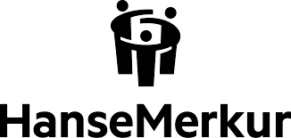
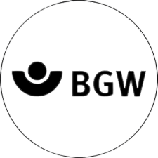
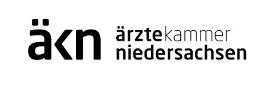

„Erinnere dich an das, was natürlich ist."Aktuelle Events & Tickets



„Erinnere dich an das, was natürlich ist."Aktuelle Events & Tickets



„Präsenz ist kein Zufall. Sie ist die Rückerinnerung an das,
was wir im Kern schon immer waren."
Ich habe Jahrzehnte auf den schillerndsten Bühnen verbracht und gelernt, was es bedeutet, eine Rolle perfekt zu spielen. Doch die wahre Kraft liegt nicht in der Inszenierung, sondern in der Natürlichkeit. Heute nutze ich diese Erfahrung, um Menschen zurück zu ihrer eigenen, ursprünglichen Schöpfungskraft zu führen – jenseits von Domestizierung und Anpassung.
„Wer aufhört zu funktionieren,
beginnt sich zu erinnern."
Jahrzehntelang war das Rampenlicht mein Zuhause. Ich habe gelernt, wie man Rollen füllt, Stimmen führt und Räume einnimmt. Doch die wichtigste Erkenntnis dieser Reise war nicht, wie man perfekt erscheint, sondern wie man echt bleibt.
Heute begleite ich Menschen dabei, ihre Masken abzulegen und zu ihrer ursprünglichen Souveränität zurückzufinden. Ich nenne es die Kunst der Rückerinnerung. Ob in der Führungsetage oder in der Tiefe einer Soul-Session: Es geht immer um das Gleiche – deine unverfälschte, natürliche Präsenz.
Oft wird gefragt, wie die Arbeit in den Coachings oder Playshops konkret aussieht. Die Antwort liegt in einer Form der Wahrnehmung, die über das Offensichtliche hinausgeht. Während der thematische Rahmen feststeht, entstehen Richtung und Tiefe aus einer unmittelbaren Verbindung im Moment. Ich arbeite nicht nach starren Lehrplänen, sondern mit einer Form von intuitiver Klarheit, die spürt, was dein Gegenüber in diesem Augenblick wirklich benötigt.
Es ist eine sehr geerdete Form der Anbindung – ein direktes Lesen des Energiefeldes, das Informationen dort abruft, wo Verstand und psychologische Analysen oft noch im Dunkeln tappen. Ohne esoterische Versprechungen, die mehr vorgeben als sie halten, nutze ich diesen „Download" als präzisen Kompass für deine Rückbesinnung. Meine Arbeit setzt dort an, wo das reine Funktionieren endet.
Wir nutzen das, was bereits da ist: Deinen Körper, deine Stimme, deine Fantasie. Über den natürlichen Ausdruck, die Vibration des eigenen Tons oder das Reaktivieren verdrängter Gefühlsebenen finden wir spielerisch Zugang zu jenen Anteilen, die im technisierten Alltag oft verstummt sind.
Ohne Druck, aber mit der Fähigkeit, dich in deinem Kern wirklich zu sehen, kitzeln wir das Verschüttete wieder hervor. Es ist kein Neuerfinden, sondern ein freudvolles Wiedererinnern an deine eigene, unerschütterliche Natur.

Partner-Workshops, Executive Mentoring, Auftritt & Wirkung.
Mehr erfahren
Playshops, Bloom Comune, Live Chor, Melody Channeling, One on One Coaching
Zum Soul Bereich„Erfahrung, die in der Tiefe wurzelt
und weite Kreise zieht."
Aus der Fülle von über drei Jahrzehnten aktiver Gestaltung ist ein Fundament gewachsen, das heute den Raum für deine eigene Rückbesinnung hält.
25 Jahre aktive Bühnenerfahrung und über 400 Workshops als Toolbox zur Rückbesinnung auf das eigene Wesen, um den wahrhaftigen Ausdruck und die Freude am eigenen Sein wiederzuentdecken.
Über 100 Mentorings für Menschen, als Basis für die Freiheit, im Licht der Öffentlichkeit ganz man selbst zu bleiben.
Kooperationen mit über 100 Stiftungen und Unternehmen in Projekten mit sozialer Tragkraft, bei denen echter Wandel beginnt.
Ein globales Netzwerk aus Kollaborationen, das Präsenz und menschliche Verbindung über Ländergrenzen hinweg lebendig macht.
Hinter jeder Zahl stehen echte Begegnungen, tiefgreifende Prozesse und gewonnene Erkenntnisse. Über drei Jahrzehnte aktiver Gestaltung bilden heute die verlässliche Basis für deine ganz persönliche Rückbesinnung.
In Resonanz gehenDie Fähigkeit, Menschen in ihre Kraft zu führen, kennt keine Nischen. Ob in globalen Konzernen, sozialen Organisationen oder im Scheinwerferlicht der Medien – über Jahrzehnte ist ein Netz aus Partnern und Projekten entstanden, das für die universelle Tragkraft meiner Arbeit steht.
„Lass uns den Raum öffnen.."
Jede Session beginnt mit einem ersten Impuls. Was bewegt dich gerade?